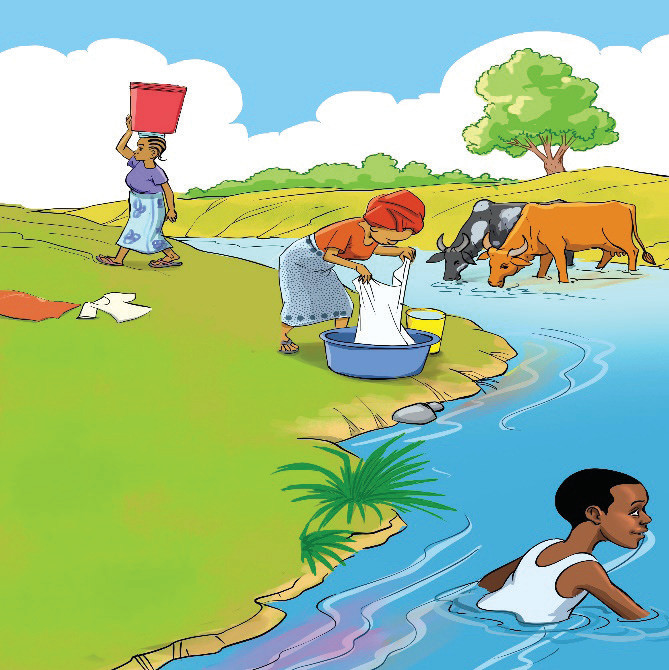

Unit
Three
Three
Expressing location
Introduction
We use words to show where something is located or where an incident happens. In this unit, you will learn to use ‘in’, ‘at’, ‘on’, ‘under’, ‘over’, ‘near’, ‘inside’ and ‘outside’ to express location. You will use them in speech and writing to ask and respond to questions about where something is located. The competencies developed will enable you to convey messages clearly and consistently.

Think about the words you can use to say where something is found
Activity 3.1:
Expressing location using ‘in’, ‘on’ and ‘at’
(a) Act out the following conversations between Bahati and Tumaini.
Bahati:
Where is the boy in this picture?

Tumani: The boy is in the water.